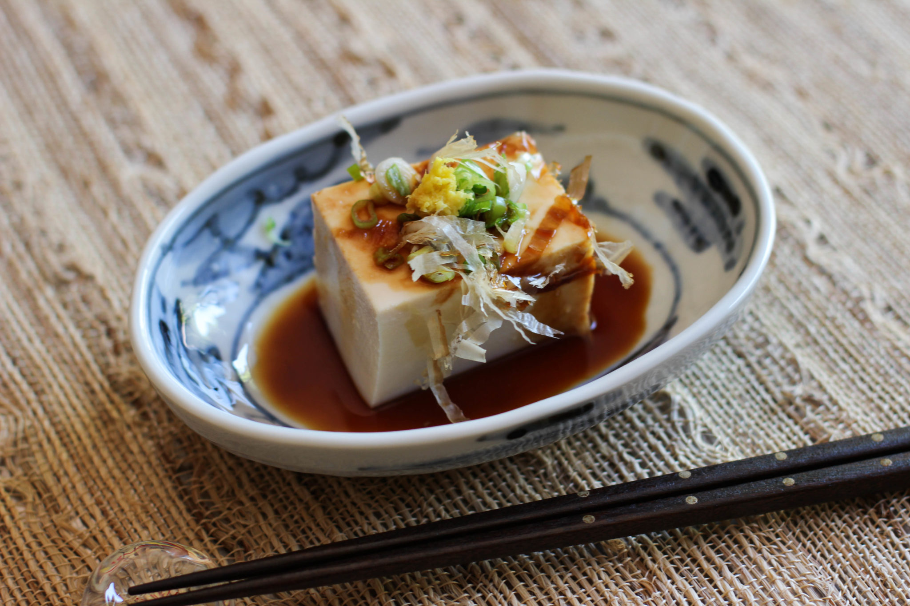

Hiyayakko, consumed mostly on hot summer days, is a block of soft tofu that is served cold and topped with finely minced scallions, fresh ginger, and flavorful dried flakes of bonito, a type of oily fish from the mackerel family. The dish is often dipped in soy sauce for an extra boost of flavor.
Meal prep time : 5 minutes
Servings : 1